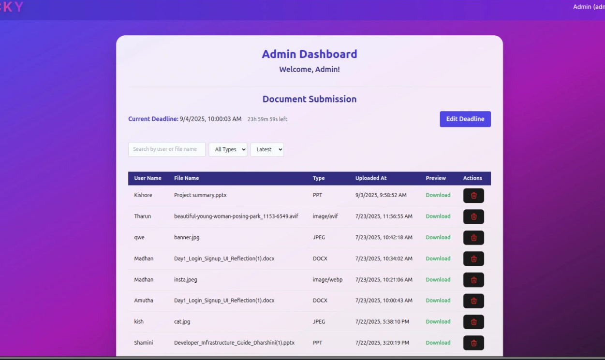

Docky – Document Submission Platform
What it is: A digital platform that simplifies document submission between students and staff, replacing manual paperwork with structured digital workflows.
Impact: Helped streamline academic document management and improved the overall submission efficiency.
What I learned: How to think through user roles (student vs. staff), build cleaner forms, and make the process more organized and trackable.